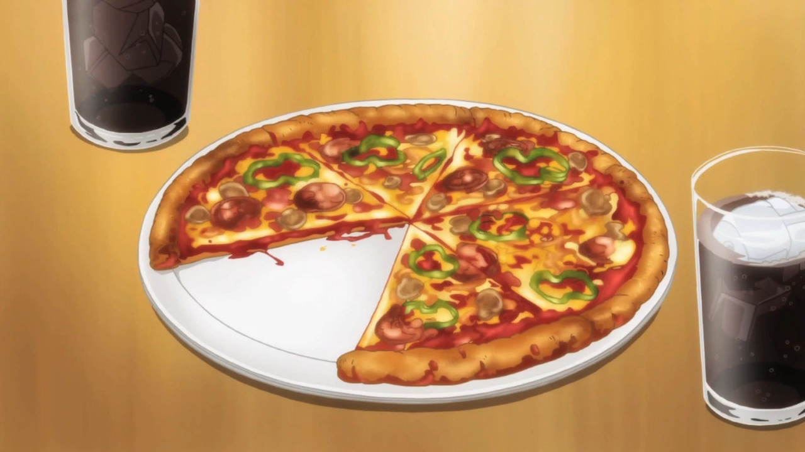

Pizza

Pizza is a classic dish. Who knew dough and tomato sauce would be so tasty? While it's definitely cheaper and probably tastier to purchase a pizza, I think making a pizza is a fun cooking experience. I only like to make the pizza dough. Maybe one day I'll be able to perfect my own tomato sauce. Till then, here's my recipe of pizza using Preppy Kitchen's pizza dough recipe.
Time
Ingredients
Pizza Dough
- 3/4 cups water warm
- 2 cups all-purpose flour
- 1 packet yeast
- 1 tbsp granulated sugar
- 3/4 tsp salt
- 1 tbsp olive oil
- Jar tomato sauce
- Shredded mozzarella
- Optional ingredients: pepperoni, mushrooms, pineapple, bell peppers, onions, bacon, sausage
Instructions
- Follow Preppy Kitchen's pizza dough recipe.
- Add your tomato sauce and cheese. Measure with your heart!
- Pop this bad boy into the oven at 450F for about 12-15 minutes or until golden.
- Enjoy!